Marvel Knights: Spider-Man (2004 - 2006)
| Comic Book | Release Date | Cover |
|---|---|---|
| Marvel Knights: Spider-Man #1 Down Among the Dead Men: Part One of Four |  | |
| Marvel Knights: Spider-Man #2 Down Among the Dead Men: Part Two of Four | 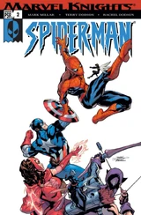 | |
| Marvel Knights: Spider-Man #3 Down Among the Dead Men: Part Three of Four | 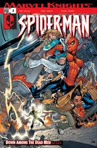 | |
| Marvel Knights: Spider-Man #4 Down Among the Dead Men: Conclusion | 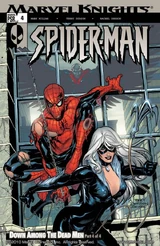 | |
| Marvel Knights: Spider-Man #5 Venomous Part One | 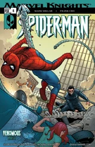 | |
| Marvel Knights: Spider-Man #6 Venomous Part Two | 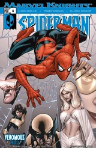 | |
| Marvel Knights: Spider-Man #7 Venomous Part Three | 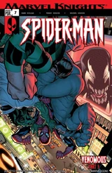 | |
| Marvel Knights: Spider-Man #8 Venomous Part Four | 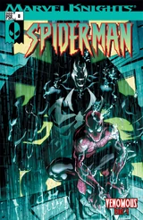 | |
| Marvel Knights: Spider-Man #9 The Last Stand Part 1 of 4 | 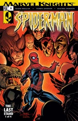 | |
| Marvel Knights: Spider-Man #10 The Last Stand Part 2 of 4 | 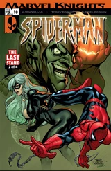 | |
| Marvel Knights: Spider-Man #11 The Last Stand Part 3 of 4 | 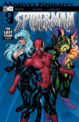 | |
| Marvel Knights: Spider-Man #12 The Last Stand Part 4 of 4 | 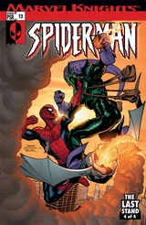 | |
| Marvel Knights: Spider-Man #13 Wild Blue Yonder Part 1 | 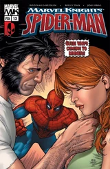 | |
| Marvel Knights: Spider-Man #14 Wild Blue Yonder Part 2 of 6 | 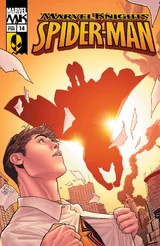 | |
| Marvel Knights: Spider-Man #15 Wild Blue Yonder Part 3 of 6 | 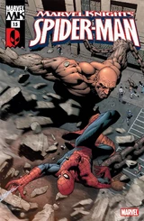 | |
| Marvel Knights: Spider-Man #16 Wild Blue Yonder Part 4 of 6 | 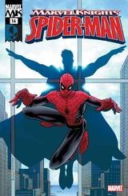 | |
| Marvel Knights: Spider-Man #17 Wild Blue Yonder Part 5 of 6 | 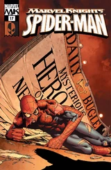 | |
| Marvel Knights: Spider-Man #18 Wild Blue Yonder Conclusion | 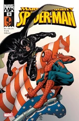 | |
| Marvel Knights: Spider-Man #19 Denial | 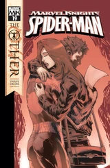 | |
| Marvel Knights: Spider-Man #20 Retreat | 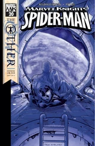 | |
| Marvel Knights: Spider-Man #21 Aftermath | 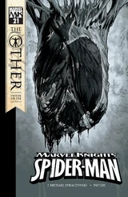 | |
| Marvel Knights: Spider-Man #22 Destiny's Child | 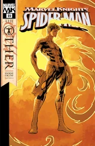 |